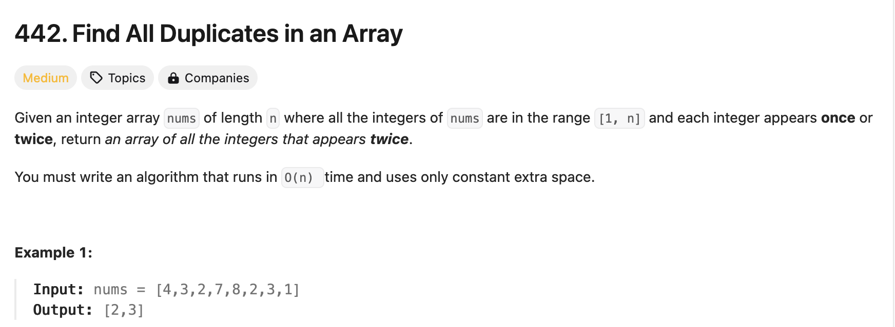

Learning Objectives:
Software Tools Needed: Web browser to access textbook and an IDE (on-line or on computer) with core Python 3.6+ loaded.
Lab Notes: Download the outline and focus questions to guide you while working through this lab. These are a useful tool for note taking and as well as studying for the quizzes and final exam.
As we wrap up the section of our course on linear data types, let's look at other ways we can use the linear structure in efficiently solving the problems.
Here's a classic question:
 442. Find All DuplicatesWhile we can use a dictionary or look-up table to solve this with linear additional space, can you use less space?
The idea is to use the inputted array to store what you have seen before. When we've seen the number, we'll multiply its box by -1. If we see a box that's negative, then we know that it's a duplicate.
Looping through the list: nums = [4,3,2,7,8,2,3,1]
nums[4-1] *= -1 and the array: nums = [4,3,2,-7,8,2,3,1] nums[3-1] *= -1 and the array: nums = [4,3,-2,-7,8,2,3,1] nums[2-1] *= -1 and the array: nums = [4,-3,-2,-7,8,2,3,1] nums[7-1] *= -1 and the array: nums = [4,-3,-2,-7,8,2,-3,1] nums[8-1] *= -1 and the array: nums = [4,-3,-2,-7,8,2,-3,-1] nums[2-1] < 0 so we've seen it before and add 2 to the duplicates list. nums[3-1] < 0 so we've seen it before and add 3 to the duplicates list. nums[1-1] *= -1 and the array: nums = [-4,-3,-2,-7,8,2,-3,-1] Next, write out the approach as pseudocode and then translate it into Python (see Problem 22).
For additional practice on core Python, see the HackerRank prepare series:
HackerRank: Prepare Python
Click the Easy option on the right hand menu, and work through their Python challenges.
For more practice on using dictionaries to solve problems, here are some popular ones from LeetCode where using dictionaries is an efficient approach: